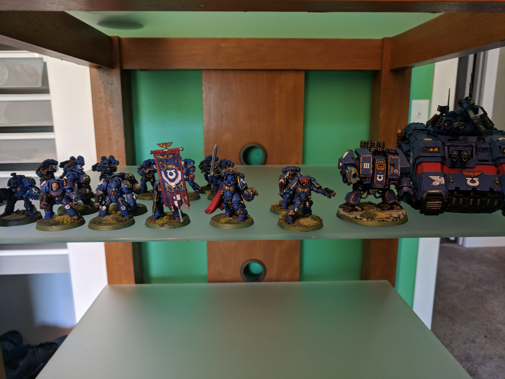
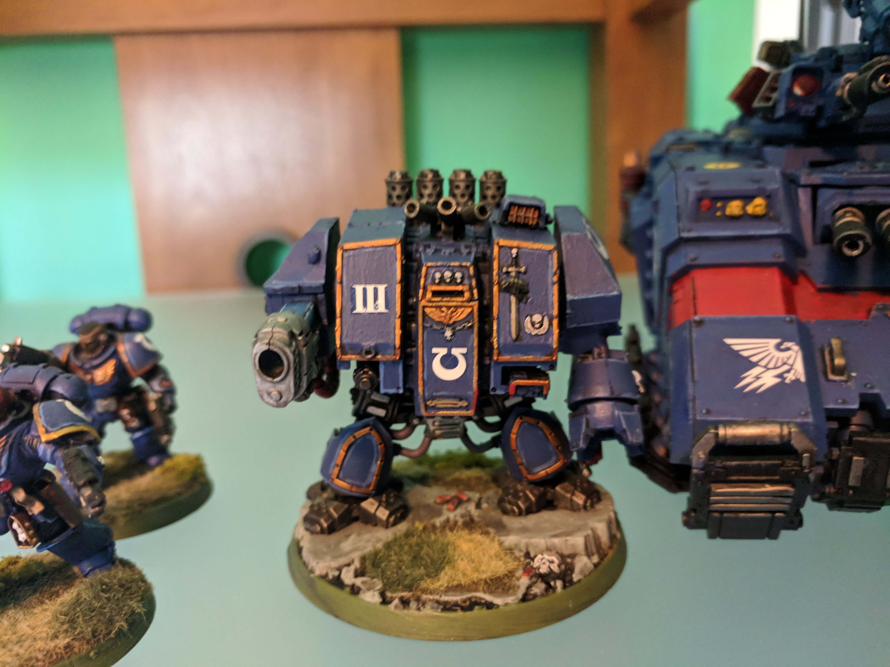
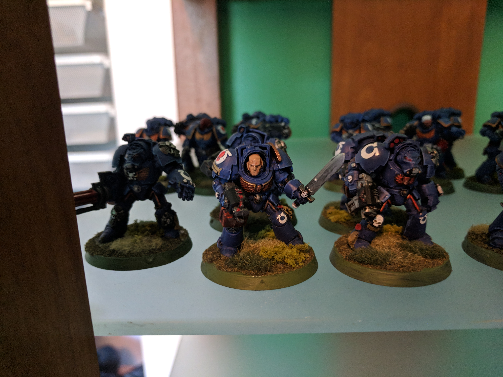
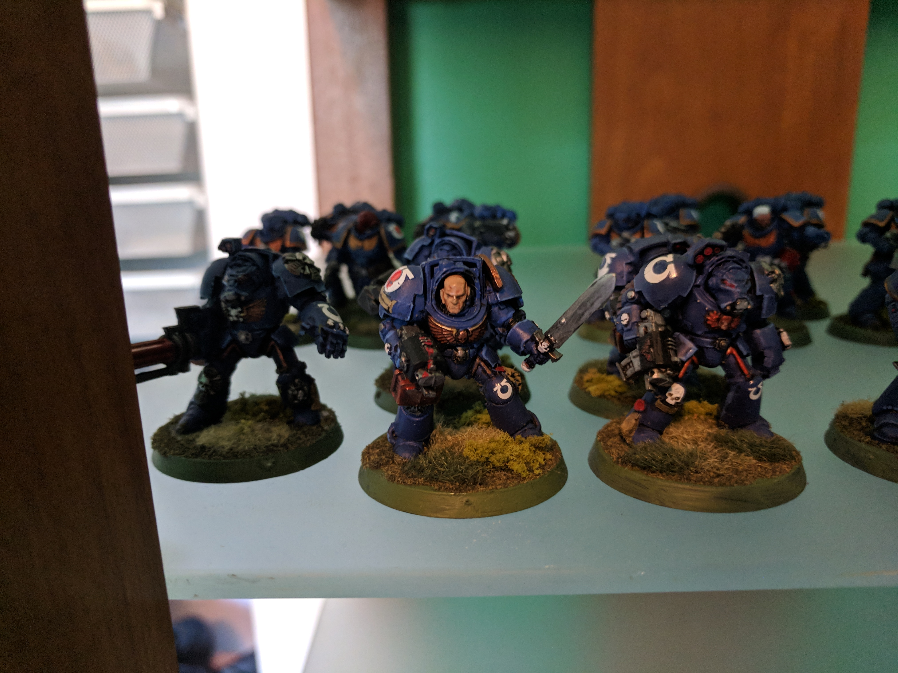
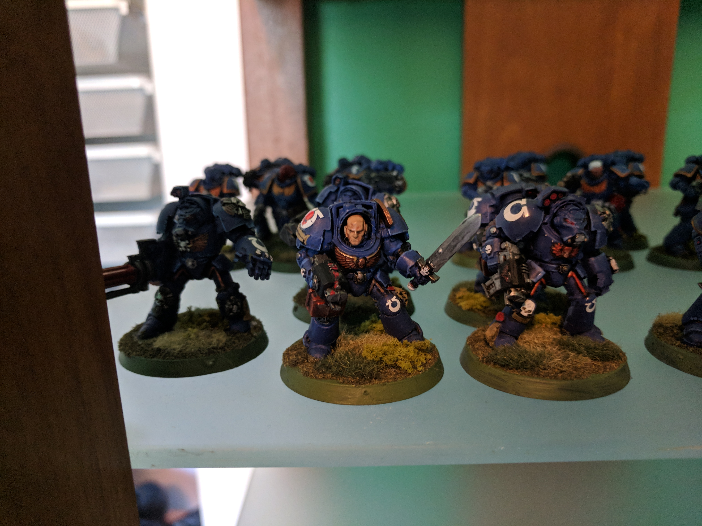
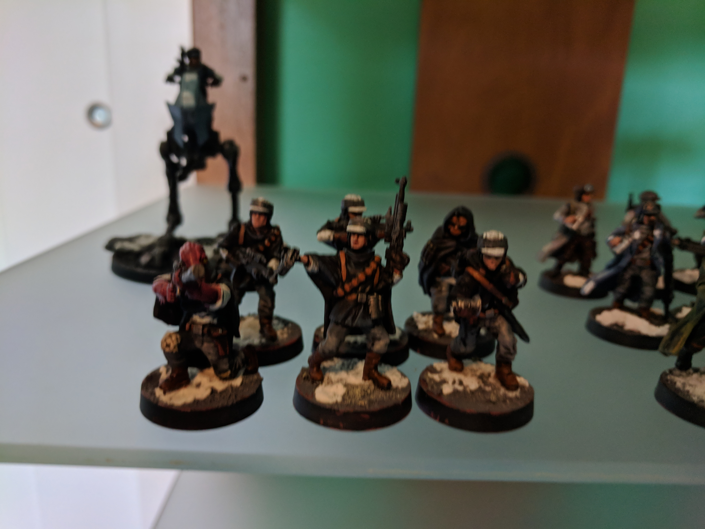
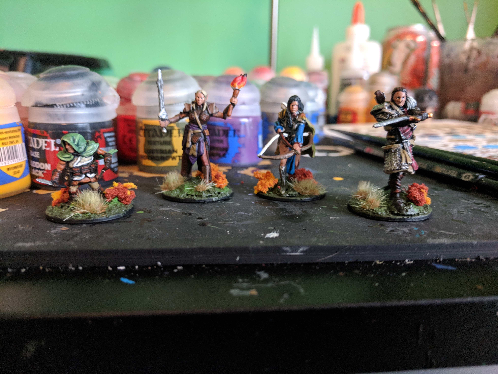
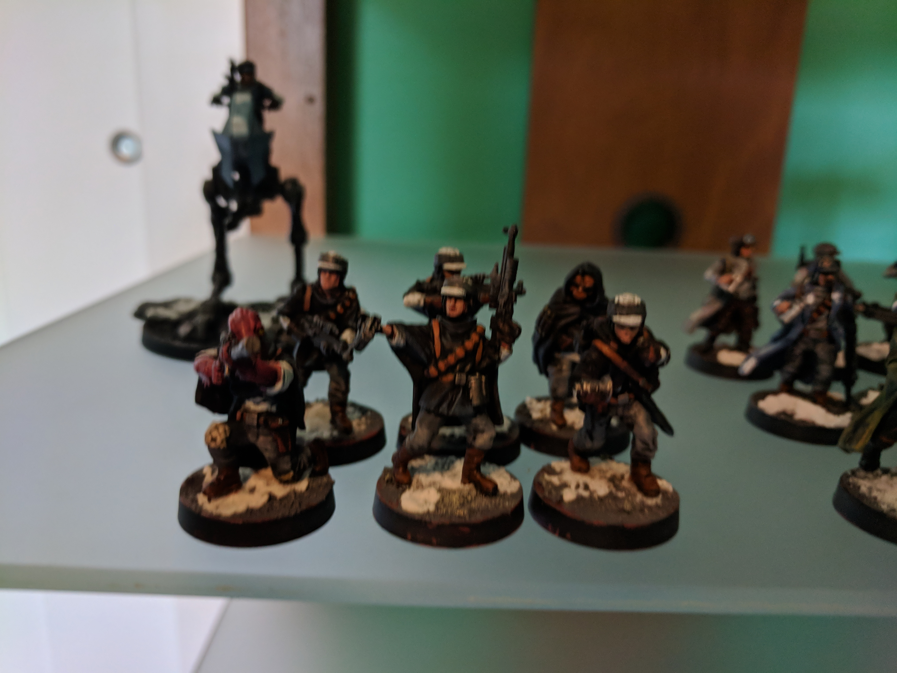
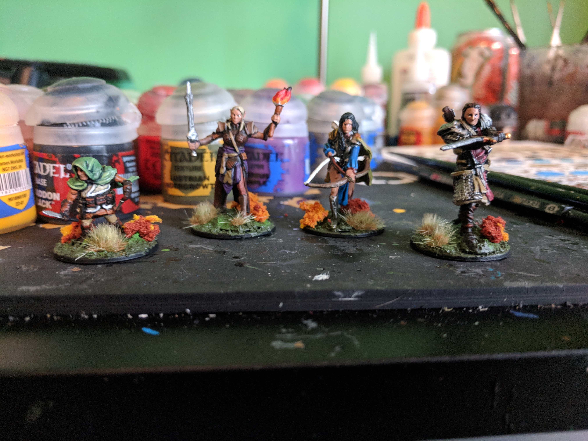

My name is Alec. I'm from a town called O'Fallon in Southern Illinois (about 20mins away from the river). I'll be using this site
to detail a highlights from my painting career and some photos of my growth over time. Everything from my first piece to the current
commision work I do now, and everything inbetween. My hobby is a bit different from traditional canvas painting, I do minature painting.
They are fundamentally the same, but differ in the 2D vs. 3D aspect. So, I'll start from the beginning.
Where the Magic is Made
Before I get into any of the actual models, I figured a picture of my workstation would be good for some context. It's what I would describe
as an organized mess. It's nothing fancy, but it serves its purpose, somewhat. Complete with an unpainted models to shame me into work.
From Small Beginnings
Below is the first model I ever painted, about 8 years ago. As you can see, it's pretty awful. The paint is thick, the model is dirty and
the basing is rough. I could go and on, but that would serve no point. I keep this model around to show me where I came from, to remind
me of my improvement over the years. Hopefully you find the other images on this page at least a bit more visually appeasing.
First Finished Project
After spending about 2 years on my last army (and many more models that look like the one above), I started on my Ultramrines army
for Warhammer 40k. This will be the first project I consider to be at least decent and worth showing. The title is in fact a little misleading,
as I still add to the army occasionaly. Pictured below is everything I have finished up to date.



Current Work
There has been plenty of work done inbetween my Ultramarines and this project, but as this is my most recent, I figured it would be a good
landmark of my current skill. Recently Games Workshop re-released the rules and minature line to the Lord of the Rings
tabletop game. Being a big Tolkien fan, I of course had to drop everything I was doing and shift my focus.
Commision Work
About a year ago, I realized that I could make a little bit of money while also improving my skills and practicing my hobby. So I took on a couple
of jobs from a couple of people I knew personally. I recently am wrapping up a commision for a force of rebels for Fantasy Flight'sStar Wars Legion as well as a friend's D&D party.


 



 


